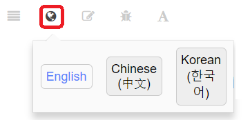

PX4 개발 가이드


개발자를 위한 문서! 이 길잡이 문서는 계속 작업 중이며 일반 사용자용은 아닙니다.
이 문서에서는 PX4 시스템 구조 내부가 어떻게 동작하는지를 설명합니다. 개발자는 다음과 같은 정보를 얻을 수 있습니다 :
- 개발자를 위한 초기 셋업.
- PX4 Flight Stack와 PX4 미들웨어 접근 및 수정.
- PX4 빌드 및 배포 Intel® Aero Ready to Fly Drone, Qualcomm Snapdragon Flight, Pixhawk, Pixfalcon 및 기타 autopilots.
기여하기
이 가이드 문서는 GitBook을 사용합니다. 로컬 카피는 공식 셋업방법을 따라 설치할 수 있습니다. gitbook serve을 실행하기 전에 필요한 플러그인들이 설치되어 있는지 확인하세요.
번역
최근에 가이드 문서에 대한 번역 버전을 제공하고 있습니다. 언어변환 아이콘을 클릭해서 해당 언어의 문서로 접근이 가능합니다 :

번역에 기여하는 방법에 대해서 시작하기를 참고하세요.
포럼 및 채팅
핵심 개발팀 및 커뮤니티는 다음 포럼 및 채팅 채널에서 활발하게 활동합니다.
- PX4 Discuss (권장)
- Slack (가입)
- Google+
플랫폼에 기여 하고자 하는 개발자는 weekly dev call 또한 참여할 수 있습니다.
라이센스
PX4 개발 가이드는 CC BY 4.0 라이센스를 따릅니다. 보다 자세한 내용은 Github Repository을 참고하세요.